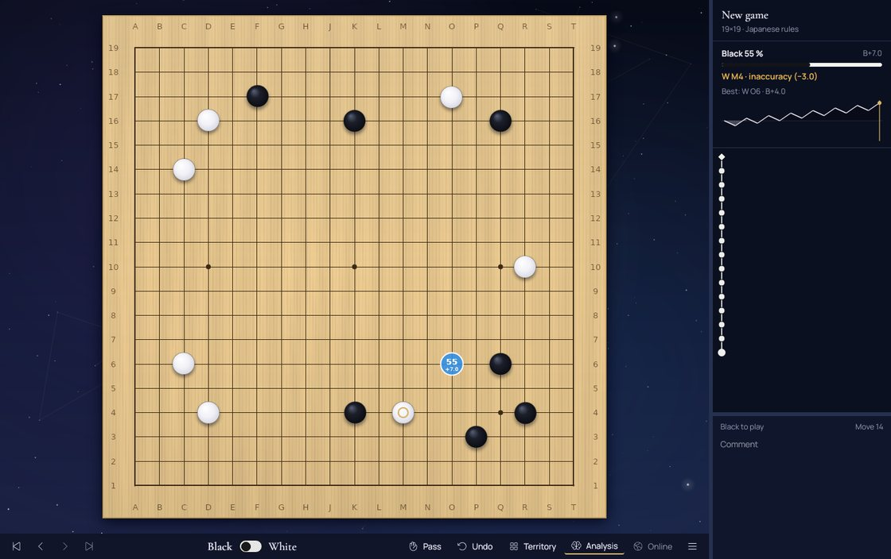
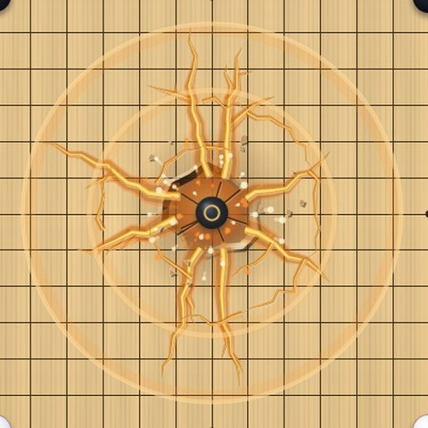
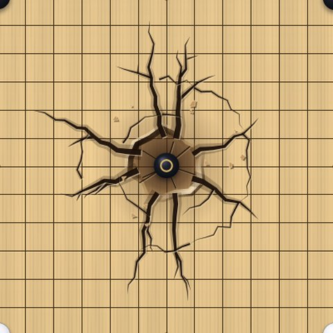
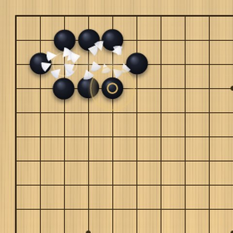
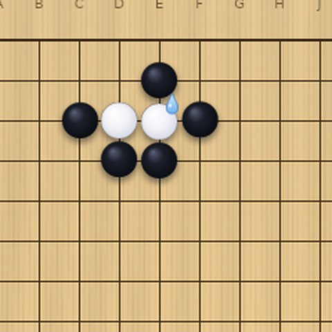
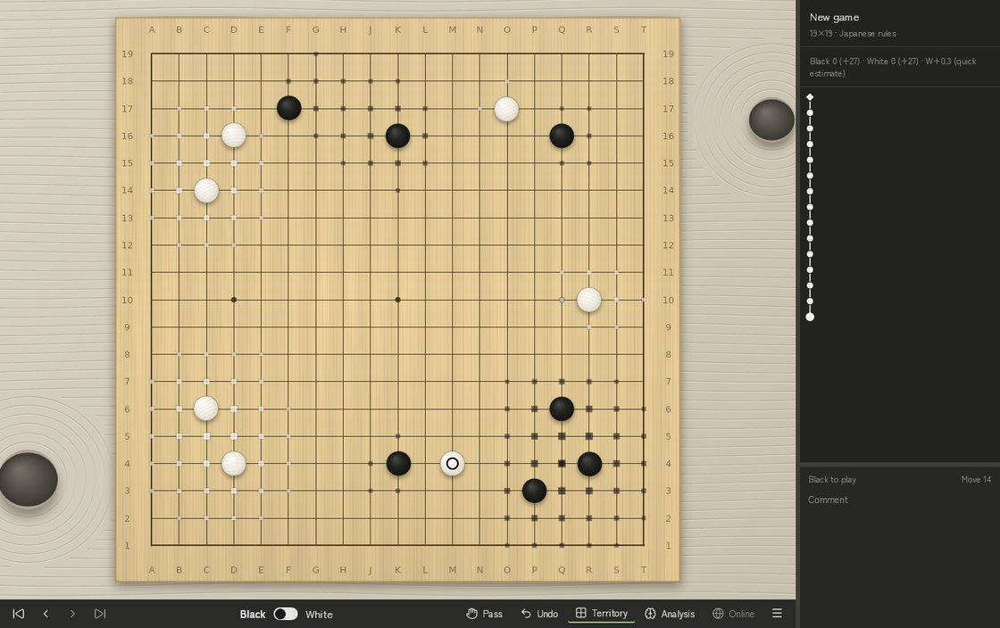
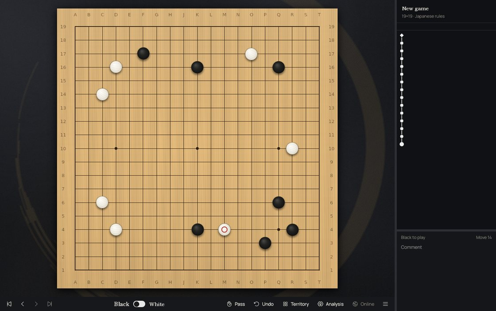
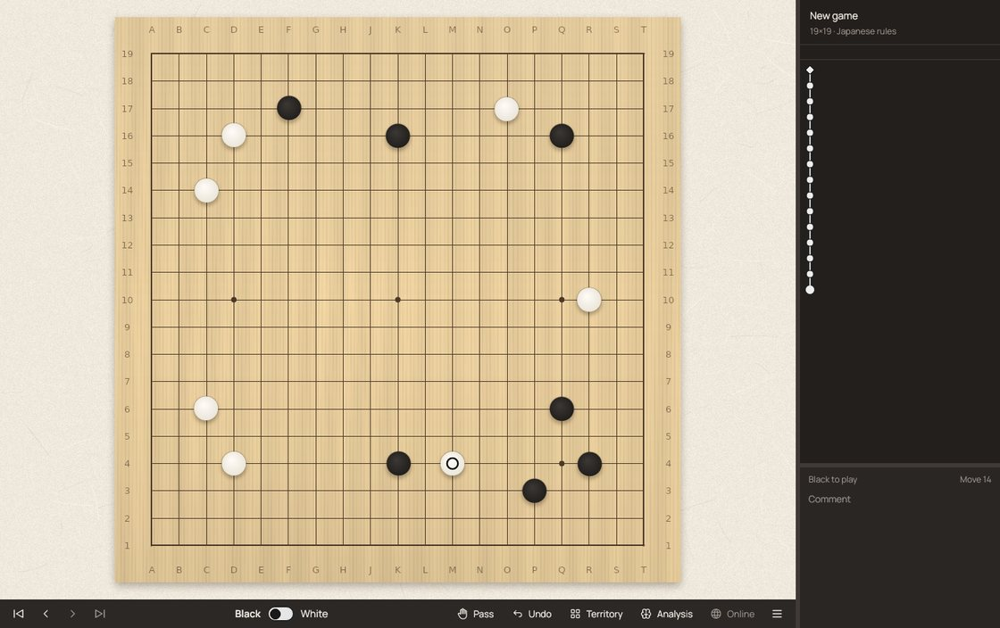

Go · Baduk · Weiqi
Hoshi is a free desktop app for playing and studying Go. A beautiful board, KataGo judging every move live, cinematic effects when you find the best one, and lo-fi music that heats up with your streaks.

Features
Play friends on one screen, review your games with an engine, or take on the world on OGS.
KataGo runs in the background from the moment Hoshi opens and rates every move: best, excellent, good, inaccuracy, mistake or blunder, with points lost.
The best move shakes the board, cracks the wood and throws embers. Captured stones shatter. Groups in atari nervously sweat.
A calm lo-fi loop that adds drums, arpeggios and an overdrive layer as your good moves stack up, and cools down when you slip.
See secure and potential territory and the estimated score, from Hoshi's own estimator or KataGo's ownership map.
Sign in to online-go.com, accept challenges and play in real time with clock and chat. Hoshi only creates unranked games.
Open and save SGF files, explore variations in a game tree, add comments, marks and setup stones.
Night sky, Ink and gold, Zen garden, Warm minimal and a Classic tribute, each with its own board, stones and animated background.
Free and open source. No account needed to play locally; your OGS login uses OAuth and Hoshi never stores your password.
Effects
Every effect is drawn and synthesised by Hoshi itself — no stock footage, no samples.




Themes



Music
Six layers composed in code join one by one as you string good moves together. A blunder stops the tape. Time cools it back down.
Demo: calm, then a streak of strong moves from 0:16 and a blunder at 1:10… you'll hear it.
During live games on OGS, Hoshi turns off the analysis, the territory estimate and every engine-driven effect — OGS forbids AI help while you play. You still get the board, the sounds and the captures; the review is waiting after the game.
Get Hoshi
Hoshi is built with .NET and Avalonia and runs on Windows, macOS and Linux.
Get the .NET 10 SDK from dot.net for your system.
From the Hoshi folder:
dotnet run --project src/Hoshi.App -c Release
Download KataGo and a network (b18c384 is a good start), then pick them in Preferences → Analysis → Test KataGo.